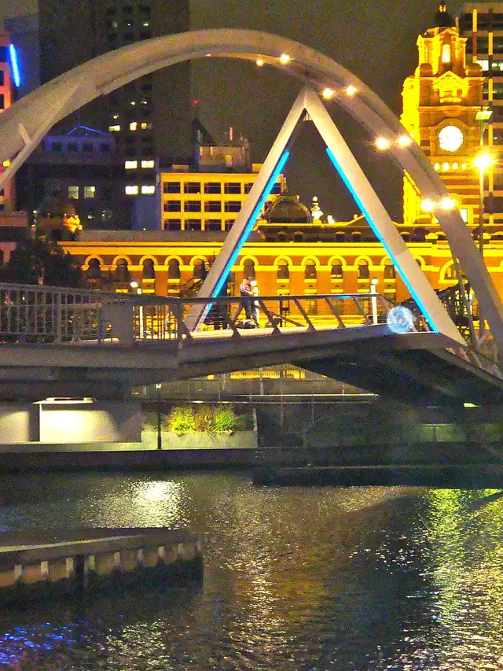

Southgate, Southbank
Southgate is a shopping centre in Southbank, in the Melbourne City Council area, handy for a rainy day or a quick stop. Elizabeth St/Flinders St #4 (tram) is a 4-minute walk away and the nearest public toilet is about 86 m away.


Quick facts
- Phone
- +61385385200
- Toilets
- 86 m away
- Public transport
- Elizabeth St/Flinders St #4, tram (routes 70, 75), 4 min walk
Details
- Phone
- +61385385200 (Venue website)
Questions parents ask
- Where is Southgate?
- Southgate is in Southbank, Victoria.
- Are there toilets at Southgate?
- The nearest public toilet is about 86 m away.
- How do I get to Southgate by public transport?
- The closest stop is Elizabeth St/Flinders St #4 (routes 70, 75), a 4-minute walk.
- What is the phone number for Southgate?
- Call Southgate on +61385385200.
Nearby places
- Chatime
Cafe or restaurant · SouthbankToilet nearbyTram 5 min walk
- Miyako
Cafe or restaurant · SouthbankToilet nearbyTram 5 min walk
- Rocks on Wheels
Playground · SouthbankFreeBus 1 min walk
- City Library
Library · MelbourneToilet nearbyFreeTram 2 min walk
- Cathedral Arcade
Shopping centre · MelbourneToilet nearbyTrain 1 min walk
- Block Arcade
Shopping centre · MelbourneToilet nearbyTram 1 min walk
- ArtPlay Playground
Playground · MelbourneToilet nearbyFreeTram 4 min walk
- Market Street Park
Park · MelbourneToilet nearbyFreeTram 1 min walk